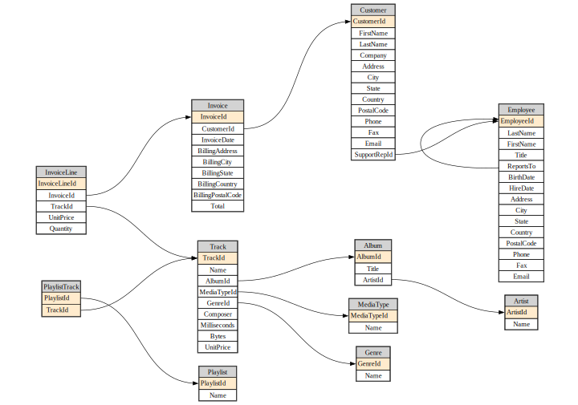

from IPython.display import MarkdownSource
Source code for fastlite
Metadata
db = Database("chinook.sqlite")Database.t
Database.t ()
Exported source
class _Getter:
"Abstract class with dynamic attributes providing access to DB objects"
def __init__(self, db): self.db = db
# NB: Define `__dir__` in subclass to get list of objects
def __repr__(self): return ", ".join(dir(self))
def __getitem__(self, idxs):
if isinstance(idxs,str): idxs = [idxs]
return [self.db.table(o) for o in idxs]
def __getattr__(self, k):
if k[0]=='_': raise AttributeError
return self.db[k]
class _TablesGetter(_Getter):
def __dir__(self): return self.db.table_names()
@patch(as_prop=True)
def t(self:Database): return _TablesGetter(self)By returning a _TablesGetter we get a repr and auto-complete that shows all tables in the DB.
dt = db.t
dtAlbum, Artist, Customer, Employee, Genre, Invoice, InvoiceLine, MediaType, Playlist, PlaylistTrack, TrackThis also can be used to get multiple tables at once.
dt['Album','Artist'][<Table Album (AlbumId, Title, ArtistId)>, <Table Artist (ArtistId, Name)>]View.c
View.c ()
Exported source
class _Col:
def __init__(self, t, c): self.t,self.c = t,c
def __str__(self): return f'"{self.t}"."{self.c}"'
def __repr__(self): return self.c
class _ColsGetter:
def __init__(self, tbl): self.tbl = tbl
def __dir__(self): return map(repr, self())
def __call__(self): return [_Col(self.tbl.name,o.name) for o in self.tbl.columns]
def __repr__(self): return ", ".join(dir(self))
def __getattr__(self, k):
if k[0]=='_': raise AttributeError
return _Col(self.tbl.name, k)
@patch(as_prop=True)
def c(self:Table): return _ColsGetter(self)
@patch(as_prop=True)
def c(self:View): return _ColsGetter(self)Table.c
Table.c ()
Column auto-complete and repr are much the same as tables.
artist = dt.Artist
ac = artist.c
acArtistId, NameColumns stringify in a format suitable for including in SQL statements.
print(f"select {ac.Name} ...")select "Artist"."Name" ...View.__str__
View.__str__ ()
Return str(self).
Exported source
@patch
def __str__(self:Table): return f'"{self.name}"'
@patch
def __str__(self:View): return f'"{self.name}"'Table.__str__
Table.__str__ ()
Return str(self).
Tables and views do the same.
print(f"select {ac.Name} from {artist}")select "Artist"."Name" from "Artist"Queries and views
Database.q
Database.q (sql:str, params=None)
Exported source
@patch
def q(self:Database, sql: str, params = None)->list:
return list(self.query(sql, params=params))This is a minor shortcut for interactive use.
acdc = db.q(f"select * from {artist} where {ac.Name} like 'AC/%'")
acdc[{'ArtistId': 1, 'Name': 'AC/DC'}]Table.__call__
Table.__call__ (with_pk:bool=False, where:str|None=None, where_args:Union[Iterable,dict,NoneType]=None, order_by:str|None=None, limit:int|None=None, offset:int|None=None, **kwargs)
Shortcut for rows_where or pks_and_rows_where, depending on with_pk
Exported source
@patch
def __call__(
self:Table, with_pk:bool=False, where:str|None=None,
where_args: Iterable|dict|NoneType=None, order_by: str|None=None,
limit:int|None=None, offset:int|None=None, **kwargs)->List[dict]:
"Shortcut for `rows_where` or `pks_and_rows_where`, depending on `with_pk`"
f = getattr(self, 'pks_and_rows_where' if with_pk else 'rows_where')
return list(f(where=where, where_args=where_args, order_by=order_by,
limit=limit, offset=offset, **kwargs))This calls either rows_where (if with_pk) or with_pk (otherwise).
artist(limit=2)[{'ArtistId': 1, 'Name': 'AC/DC'}, {'ArtistId': 2, 'Name': 'Accept'}]artist(True, limit=2)[(1, {'ArtistId': 1, 'Name': 'AC/DC'}), (2, {'ArtistId': 2, 'Name': 'Accept'})]album = dt.Album
acca_sql = f"""select {album}.*
from {album} join {artist} using (ArtistId)
where {ac.Name} like 'AC/%'"""hl_md(acca_sql, 'sql')select "Album".*
from "Album" join "Artist" using (ArtistId)
where "Artist"."Name" like 'AC/%'db.q(acca_sql)[{'AlbumId': 1,
'Title': 'For Those About To Rock We Salute You',
'ArtistId': 1},
{'AlbumId': 4, 'Title': 'Let There Be Rock', 'ArtistId': 1}]db.create_view("AccaDaccaAlbums", acca_sql, replace=True)<Database <sqlite3.Connection object>>Database.v
Database.v ()
Exported source
class _ViewsGetter(_Getter):
def __dir__(self): return self.db.view_names()
@patch(as_prop=True)
def v(self:Database): return _ViewsGetter(self)dv = db.v
dvAccaDaccaAlbumsdb.q(f"select * from {dv.AccaDaccaAlbums}")[{'AlbumId': 1,
'Title': 'For Those About To Rock We Salute You',
'ArtistId': 1},
{'AlbumId': 4, 'Title': 'Let There Be Rock', 'ArtistId': 1}]Database diagrams
(Requires graphviz.)
fk = album.foreign_keys[0]
fkForeignKey(table='Album', column='ArtistId', other_table='Artist', other_column='ArtistId')diagram
diagram (tbls, ratio=0.7, size='10', neato=False, render=True)
Exported source
def _edge(tbl):
return "\n".join(f"{fk.table}:{fk.column} -> {fk.other_table}:{fk.other_column};"
for fk in tbl.foreign_keys)
def _row(col):
xtra = " 🔑" if col.is_pk else ""
bg = ' bgcolor="#ffebcd"' if col.is_pk else ""
return f' <tr><td port="{col.name}"{bg}>{col.name}{xtra}</td></tr>'
def _tnode(tbl):
rows = "\n".join(_row(o) for o in tbl.columns)
res = f"""<table cellborder="1" cellspacing="0">
<tr><td bgcolor="lightgray">{tbl.name}</td></tr>
{rows}
</table>"""
return f"{tbl.name} [label=<{res}>];\n"Exported source
def diagram(tbls, ratio=0.7, size="10", neato=False, render=True):
layout = "\nlayout=neato;\noverlap=prism;\noverlap_scaling=0.5;""" if neato else ""
edges = "\n".join(map(_edge, tbls))
tnodes = "\n".join(map(_tnode, tbls))
res = f"""digraph G {{
rankdir=LR;{layout}
size="{size}";
ratio={ratio};
node [shape=plaintext]
{tnodes}
{edges}
}}
"""
return Source(res) if render else resdiagram(db.tables)